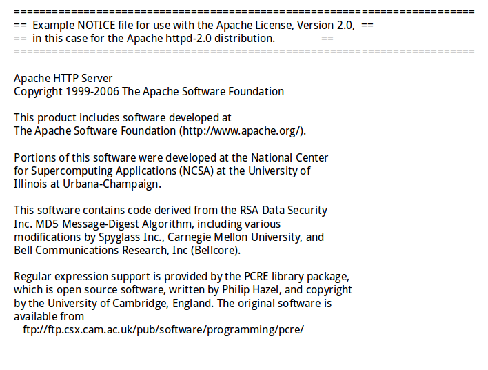
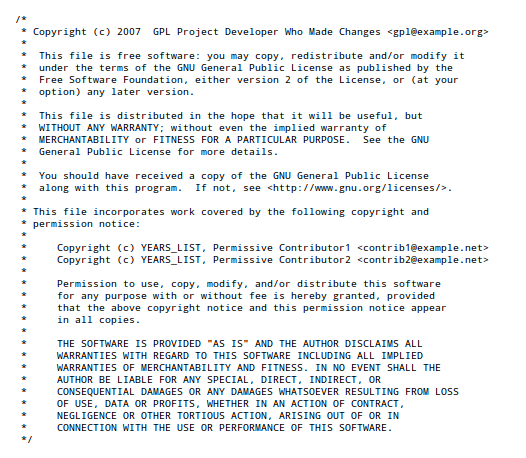

感謝您對「自由軟體鑄造場」的支持與愛護，十多年來「自由軟體鑄造場」受中央研究院支持，並在資訊科學研究所以及資訊科技創新研究中心執行，現已完成階段性的任務。 本網站預計持續維運至 2021年底，網站內容基本上不會再更動。
也紀念我們永遠的朋友 李士傑先生（Shih-Chieh Ilya Li）。
也紀念我們永遠的朋友 李士傑先生（Shih-Chieh Ilya Li）。
Legal Column  利用 Apache-2.0 程式所應遵守的義務規定
利用 Apache-2.0 程式所應遵守的義務規定
Open Source Software license
 We provide Open Source Software license and legal materials via this page.
We provide Open Source Software license and legal materials via this page.
利用 Apache-2.0 程式所應遵守的義務規定
Created at Tuesday, 26 March 2013 02:39 Last Updated on Tuesday, 26 March 2013 22:13
Apache License 2.0（以下簡稱 Apache-2.0）是 Apache Software Foundation（簡稱 ASF）在 2004 年所發布的自由開源軟體授權條款（註一），雖然一開始從數據上來看，Apache-2.0 被開源專案使用的程度，並不如 BSD、GPL 等授權條款高，不過由於 ASF 旗下專案包括使用率極高的 Apache httpd，以及 Google 在智慧型行動裝置上主推的 Android 平台，均採用 Apache-2.0 來授權，因此此一授權方式的重要性與影響力日漸提升。近兩年來，筆者在工作上發現，愈來愈多人在詢問與討論 Apache-2.0 條款的相關內容，而這些問題中，又以詢問應該如何遵守 Apache-2.0 授權程式的義務性規定佔了大部分。為此，本文特別針對 Apache-2.0 的義務規定加以說明，並且模擬常見的幾種狀況，提供實際應用的著作權聲明範本，希望可以協助開發者安心取用 Apache-2.0 的授權程式來進行程式改作與專案開發（註二）。 【Apache-2.0 義務首重智財權與貢獻者聲明的保留】
Apache 授權條款與 BSD、MIT 等授權條款非常相近，基本理念是只要使用者達到彰顯前手作者與貢獻者名譽的標示義務，則後續的利用方式原則上即不受限，此一特質與會拘束衍生程式授權方式的 GPL 類別有很大的不同（註三），所以說，利用 Apache-2.0 授權程式，首要義務性規定的重點：便是在於程式相關的智財權資訊必須標示清楚，如程式整體專案裡包含有其他非 Apache-2.0 授權之第三方元件的話，亦須同時彰顯這些元件權利人的聲明。基本上，只要使用者完成了這些聲明的標示義務，那就幾乎已經完成了 Apache-2.0 要求的所有義務性規定。
相關的標示義務主要規定在 Apache-2.0 的第 4 條，節其要點分述如下：
1、散布 Apache-2.0 授權程式須附上 Apache-2.0 授權條款全文
使用者散布 Apache-2.0 授權的程式時，必須要附隨一份 Apache-2.0 授權條款的全文內容，讓後手可以閱讀授權條款全文，方有機會了解在利用程式時，能享有哪些權利以及必須負擔哪些義務。此一授權文件能以數位化格式內嵌至程式的互動介面，或程式的儲存媒體 (medium) 中，亦可透過紙本印刷夾附於產品包裝內，但不能僅提供網路連結，要求使用者自行上網瀏覽。
2、標示修改檔案的相關資訊
使用者若是有修改原以 Apache-2.0 授權釋出的檔案，必須在修改檔案中加上明顯的標示，讓收受此程式的後手，得以了解到哪些檔案是被修改過的，以及其修改者是誰。
3、保留原程式該保留的各項聲明 (notices)
使用者以源碼格式 (Source Code) 散布 Apache-2.0 原程式及其衍生程式的時候，必須保留原程式中所有的著作權、專利、商標與署名聲明 (attribution notice)。而若原程式中部份聲明內容，已不適宜再於衍生程式中出現的話，則使用者亦必須將這些無關的聲明內容刪除，也就是說，與衍生程式無關的聲明內容毋需附上。
4、讓後手閱讀到前手 NOTICE 檔案中的相關資訊

▲ 圖1：Apache httpd 源碼中的 NOTICE 檔案中，標示了 Apache httpd 包括及衍生自哪些著作權利人的程式碼。
NOTICE 檔案指的是一個儲放各種聲明與標示內容的檔案，例如跟程式相關的著作權、專利權，或貢獻者特意聲明或標示的相關文字資訊。而根據 Apache-2.0 的規定，如前手 Apache-2.0 程式在其程式源碼中已內置了一個這樣的聲明檔案，則使用者在散布此一程式以及衍生程式的源碼格式時，也必須保留這個 NOTICE 檔案的內容，與其他程式檔案一併散布。所以，在 Apache-2.0 授權的程式裡，有任何資訊是程式的原始開發者及其後的貢獻者，想要讓使用者與後手了解的，都可以放置在這個檔案中。所以簡單來說，NOTICE 檔案是著作權利人將資訊傳遞給使用者與後手的一個重要媒介，即使使用者修改了程式，在散布衍生程式的時候，也不能捨棄該 NOTICE 檔案內含的相關資訊；而如果該程式的後手修改者有哪些資訊與聲明想要增添的，也可以直接增添到這個 NOTICE 檔案裡面來。此外，部份 Apache-2.0 程式的開發者，亦會將第三方元件的清單與相關資訊羅列進此一 NOTICE 檔案來，以 Apache httpd 專案為例，其便透過專案根目錄下的 NOTICE 檔案，將專案內含哪些第三方著作權利人的程式碼（註四）做了清楚的交待。
而若是使用者採用 Apache-2.0 授權程式的方法，是將其融入其他程式併轉為程式目的碼 (object code) 的格式來運用，此時原專案源碼格式在 NOTICE 檔案羅列的資訊，便須轉以其他方式來進行顯示，例如在有圖形化介面的應用程式中，可以將 NOTICE 內容放在程式介面的「關於 (About)」之下，或是安裝時程式本就會顯示該專案整體的著作權聲明與第三方聲明，此時亦可將這些 NOTICE 內容一併以這個方式呈現，又或者在嵌入式硬體裝置的情況下，亦可以從權提供一份紙本的說明，將 NOTICE 的內容印製於此說明書之內，以上種種作法，都可以彈性滿足 Apache-2.0 第 4 條第 1 項第 4 款要求的標示義務。
【Apache-2.0 要求義務在實際應用上具有彈性、但亦須費心調整】
上述這四項義務規定看似簡明清楚，不過在實際散布 Apache-2.0 程式與其衍生程式的時候，還需要進一步了解到 Apache-2.0 授權程式允許「轉授權／再授權（sublicense，註五）」利用的特性，使用者對相關程式的標示方式，才能達到標示清楚、避免糾紛的目的。
Apache-2.0 是一份允許使用者以轉授權方式利用程式的授權條款，這可以從 Apache-2.0 第 2 條與第 4 條第 2 項的規定明確得知（註六）。而透過轉授權方式來散布程式的時候，使用者可以替未經修改的原程式或衍生程式選擇一份新的條款來授權，但前提是該新撰條款的內容不與 Apache-2.0 產生衝突，並且必須將 Apache-2.0 條款原有的義務性條件 (conditions) 均羅列在內。此時，轉授權散布出去的程式，已不再是透過 Apache-2.0 授權，而是適用一份改寫自 Apache-2.0 或是與 Apache-2.0 各項義務性要求完全相容的其他條款，因此若使用者依文義解釋逕依上述第 4 條第 1 項第 1 款的規定，在散布新程式的同時仍然夾附一份 Apache-2.0 原始條款全文的話，反而有時會讓收受程式的後手，對該程式的授權狀態產生混淆與誤解。所以在轉授權並改用其他授權方式釋出程式的狀況下，筆者認為使用者僅需附上新訂條款的內容即可，而不需要再附上 Apache-2.0 原始的授權全文。
另外，依照 Apache-2.0 第 4 條第 1 項第 3、4 款規定綜合以觀，Apache-2.0 授權條款具體要求，如前手程式的源碼檔案包含標示性質的 NOTICE 檔案，其後手便應將此檔案內含的資訊，在之後散布的源碼檔案中繼續留存，或是在其後散布的目的碼格式中，透過相應機制將該 NOTICE 檔案內含的資訊「顯示 (display)」出來，以讓收受該程式的後手，無論取得的是源碼格式或是目的碼格式，皆可以清楚了解所利用程式的智財權狀況。而此項標示義務其實是具有實際法律效果的，以專利授權為例，Apache-2.0 的授權機制規定，若程式的原始創作人及其後的開發者，自主性地將其擁有的專利技術寫入 Apache-2.0 程式裡，則其後的使用者，便可在 Apache-2.0 的授權基礎上，依 Apache-2.0 的相關規則合法的使用這些專利技術。故透過保存 NOTICE 相關資訊，與進一步「顯示」這些資訊的動作，能讓 Apache-2.0 程式的使用者，合法主張其是基於 Apache-2.0 的授權基礎取得這些專利授權。在此例中，即使該相關程式的運用方式經轉授權機制而有改變，保留前手標註的相關專利授權聲明，仍然得以讓後手的使用者合法的使用這些專利技術。
【著作權與授權聲明範例】
Apache-2.0 是一份相容性頗高的自由開源軟體授權條款，因此以 Apache-2.0 授權散布的程式碼，很容易與其他不同授權方式的程式碼結合成為一個新專案。不過這個新專案的授權方式，並沒有被硬性要求仍然得採用 Apache-2.0 來進行運用，因此對於一般使用者來說，如何清楚標示 Apache-2.0 衍生專案，或是集合專案 (aggregation) 的授權資訊，就牽涉到許多較為複雜的環結，而若是程式碼檔案有經過修改，之後如何透過文字聲明來呈現對前手貢獻者的名譽尊重，也是一個困擾許多使用者的問題。以下，筆者針對這些常被提出來的疑惑，選擇三種最常見的使用態樣，分別提供標示範例以供讀者參考。
1、利用 Apache-2.0 程式開發新專案、新專案整體採用其他的自由開源軟體授權條款來授權
(1) 提供程式源碼時的相關聲明
Apache-2.0 允許轉授權，因此使用者可以將 Apache-2.0 程式納入到新的自由開源軟體專案中，若新專案採用其他的自由開源軟體授權條款來授權，而此授權條款與 Apache-2.0 亦可直接相容時，則原本採用 Apache-2.0 授權的程式，便有機會直接改採新專案的授權方式來授權。此處預設新專案以採用 GPL-3.0 授權為例，建議該專案程式源碼的散布者，可以在程式碼根目錄位置的 README 或 LEGAL 等純文字檔案中，加上如下的文字，來說明專案整體著作權與相關的授權資訊。而下列文字亦可以放在專案網站中，當作簡要的著作權與授權聲明：
----
2013 (c) BBB Software 1.1
Developer Mr. B ;
URL: https://BBB.org/
BBB Software 1.1 is licensed under GNU General Public License v3.0 as published by the Free Software Foundation.
This project is distributed in the hope that it will be useful, but WITHOUT ANY WARRANTY; without even the implied warranty of MERCHANTABILITY or FITNESS FOR A PARTICULAR PURPOSE.
See the GNU General Public License v3.0 for more details. You should have received a copy of the GNU General Public License v3.0 along with this program. If not, see ;.
BBB Software 1.1 contains AAA Library 2.2 which is originally released under Apache License 2.0 and combined into BBB software 1.1 as a whole under GNU General Public License v3.0. Please see the NOTICE file in the root directory for more information.
----
此處的 NOTICE 純文字檔，即為滿足 Apache-2.0 第 4 條第 1 項第 4 款的義務性要求，此時 Mr. B 可以將原 AAA Library 2.2 的相關聲明一併存放於此，以作為一個基本的引據與紀錄，然後將整體專案以自己的名義，採用 GPL-3.0 的授權方式向後散布。
(2) 程式源碼個別檔案檔頭的簡要聲明
由於 GPL-3.0 要求在改作時，必須登載哪些檔案是經過改作，其改作時間，以及改作者，故個別檔案若原始是以 Apache-2.0 的方式授權，之後融入到整體以 GPL-3.0 授權的專案時，其檔頭 (header file) 部份的資訊，也建議能夠手動登錄必要的相關資訊，ASF 表示這部份的動作，可以參考軟體自由法律中心 (Software Freedom Law Center, SFLC) 所發布的《在 GPL 專案中維護寬鬆授權的檔案：開發者指南》（Maintaining Permissive-Licensed Files in a GPL-Licensed Project: Guidelines for Developers，以下簡稱「轉換指南」，註七），轉換指南中建議保留原本的著作權與授權聲明，然後再加上新專案的著作權與 GPL 授權聲明。筆者參考該轉換指南的內容後，改寫為如下的範例供作參考（註八）：
----
/* 2013 (c) BBB Software 1.1
* Developer Mr. B ;
* URL: https://BBB.org/
*
* This file is free software: you may copy, redistribute and/or modify it
* under the terms of the GNU General Public License v3.0 as published by the
* Free Software Foundation.
*
* This file is distributed in the hope that it will be useful, but
* WITHOUT ANY WARRANTY; without even the implied warranty of
* MERCHANTABILITY or FITNESS FOR A PARTICULAR PURPOSE. See the GNU
* General Public License v3.0 for more details.
*
* You should have received a copy of the GNU General Public License v3.0
* along with this program. If not, see ;.
*
* This file incorporates work covered by the following copyright and
* permission notice:
*
* See the NOTICE file distributed with this work for additional information regarding
* copyright ownership.
* Mr. A licenses this file to You under the Apache License, Version 2.0
* (the "License"); you may not use this file except in compliance with
* the License. You may obtain a copy of the License at
*
* https://www.apache.org/licenses/LICENSE-2.0
*
* Unless required by applicable law or agreed to in writing, software
* distributed under the License is distributed on an "AS IS" BASIS,
* WITHOUT WARRANTIES OR CONDITIONS OF ANY KIND,
* either express or implied. See the License for the specific language
* governing permissions and limitations under the License.
*/
----

▲ 圖2：採用寬鬆授權條款的源碼檔案，若是包含有 GPL 程式碼，SFLC 在轉換指南中建議該如何標示該源碼檔案中的著作權與授權資訊。
(3) 單獨散布目的碼格式時應有的標示資訊
在散布此專案目的碼格式的時候，除了須一併提供一份 GPL-3.0 授權條款全文，讓後手知悉該程式碼是以 GPL-3.0 向後授權外，並在程式的安裝或互動介面上，呈現如下的一段文字，後手就可以知道透過何種方式得到該專案的程式源碼，亦可進一步瀏覽到 AAA Library 2.2 之前以 Apache-2.0 釋出時的相關聲明：
----
BBB Software 1.1 is licensed under GNU General Public License v3.0 as published by the Free Software Foundation.
For instruction of getting its Source Code and related notices, please find the NOTICE information
----
2、利用 Apache-2.0 程式開發封閉專案、新專案中的 Apache-2.0 保留其原來的授權方式，併以不提供源碼的方式進行商業應用。
有時候使用者利用 Apache-2.0 程式的方式，也可以不要去改變該程式原來 Apache-2.0 的授權宣告，在這樣所產生的新專案中，除了 Apache-2.0 程式碼外，還併存有自行開發的封閉專案程式碼。此時，Apache-2.0 授權的部份如果在散布時願意提供源碼的話，散布者仍可以自發性的提供源碼，但依 ASF 的解釋（同註二），如果散布者轉以不提供源碼的方式來運用此一原以 Apache-2.0 授權的程式，亦可。此時最低的義務性要求，就是散布時須一併提供 Apache-2.0 授權條款的全文，以及該程式前手已註解的相關聲明。所以，如果是採後者將專案整體程式碼封閉起來的利用方式，那筆者建議此時專案整體著作權與授權聲明的說明文字，求其簡便之故，可在適當的位置加入如下的簡要資訊來滿足 Apache-2.0 授權條款要求的標示義務，這些適當的位置可以是圖形化介面中的「關於 (About)」下拉選單、嵌入式裝置所附隨的說明書，或應用程式安裝過程中所出現的著作權與授權資訊頁面：
----
2013 (c) BBB Software 1.1
Developer Mr. B ;, ALL RIGHTS RESERVED.
URL: https://BBB.org/
The AAA Library 2.2 is included from https://AAA.org under Apache-2.0, and interacted with BBB Software 1.1 as a separate part, for its licensing rule and related notices, please find the NOTICE information
----
3、利用 Apache-2.0 程式開發新專案、將原 Apache-2.0 授權的程式碼完全融入新專案改以新的商業授權方式來進行商業應用
由於 Apache-2.0 並沒有強制規定使用者在散布衍生程式時，必須要提供程式源碼，所以經過轉授權手續的 Apache-2.0 程式，也可以成為封閉源碼專案中的合法元件。此種利用方式，可說是第一種類型變化而來的，然而運作上比起第一種類型複雜許多，因為第一種類型是讓 Apache-2.0 授權的部份，轉以其他相容的自由開源軟體授權條款進行散布，這些可轉換的條款如 GPL-3.0，可以直接被引用為新的授權文件，然而，如果新專案的改作者，希望以自訂的商業授權方式來利用此一融入 Apache-2.0 授權程式碼的專案，那麼前提要件就是依 Apache-2.0 第 4 條第 2 項的規定，將本來 Apache-2.0 條款，文字內容裡的所有義務性要求都全盤改寫到新的商業授權條款裡，包含其專利反制條款與商標權相關的聲明資訊，也就是說，要經歷一個全盤改寫商業授權條款內容的工，所以一般來說這樣的應用方式並不多見，因為過程中多半要依賴法律專門的從業人員來進行條款的添附與改寫。
【結語】
Apache-2.0 是一份授權範圍廣大、義務規定寬鬆的授權條款，所以 Apache-2.0 在義務規定上著重授權資訊的傳遞、各項聲明的保留，以及貢獻者名譽的彰顯，這幾項資訊標示義務簡單扼要，要達成相關的規定對於使用者來說並不會太難。同時 Apache-2.0 不拘束衍生程式的授權方式，不硬性規定後續提供源碼的義務，這讓 Apache-2.0 程式碼在開發應用上有著很大的彈性空間，呈現出多樣化的應用型態，但適合每一種型態的資訊呈現方式可能有所不同，因此，反而讓 Apache-2.0 程式的開發者，必須多花些腦筋才能圓滿的達到適當標示的義務。本文所列舉的三個文字範例，在此僅供參考之用，若是在實際開發時，新專案的狀況與範例的應用方式有所不同，建議還是要稍加比較實際新專案與本文範例之間的差異，應該就可以自行修改出符合 Apache-2.0 義務規定的各項聲明內容！
註一：關於 Apache-2.0 內容的介紹，可以參考下列文章，林懿萱，化簡為繁的 Apache-2.0 授權條款：https://www.openfoundry.org/tw/legal-column-list/8581；葛冬梅，條文解析自由開源軟體的專利授權條款：https://www.openfoundry.org/tw/legal-column-list/8914；林誠夏，簡論「轉授權／再授權」於公眾授權領域的效力與應用方式：https://www.openfoundry.org/tw/legal-column-list/8929。
註二：ASF 針對開發者有一篇用字淺顯易懂的 FAQ，說明利用 Apache-2.0 程式碼時，所應該要知道的重要授權資訊，Apache License and Distribution FAQ：https://www.apache.org/foundation/license-faq.html。
註三：關於 GPL 類條款拘束衍生程式授權內容的說明，可以參考右列文章，林誠夏，GPL 條款對於衍生程式的判定標準與其授權拘束性的擴散範圍（上）：https://www.openfoundry.org/tw/legal-column-list/8446；林誠夏，GPL 條款對於衍生程式的判定標準與其授權拘束性的擴散範圍（下）：https://www.openfoundry.org/tw/legal-column-list/8447。
註四：ASF 所提供的 NOTICE 文字範本：https://www.apache.org/licenses/example-NOTICE.txt。
註五：關於自由開源軟體轉授權／再授權進一步的說明，請參考，林誠夏，簡論「轉授權／再授權」於公眾授權領域的效力與應用方式：https://www.openfoundry.org/tw/legal-column-list/8929。
註六：Apache-2.0 第 2 條："Subject to the terms and conditions of this License, each Contributor hereby grants to You a perpetual, worldwide, non-exclusive, no-charge, royalty-free, irrevocable copyright license to reproduce, prepare Derivative Works of, publicly display, publicly perform, sublicense, and distribute the Work and such Derivative Works in Source or Object form."；Apache-2.0 第 4 條第 2 項"You may add Your own copyright statement to Your modifications and may provide additional or different license terms and conditions for use, reproduction, or distribution of Your modifications, or for any such Derivative Works as a whole, provided Your use, reproduction, and distribution of the Work otherwise complies with the conditions stated in this License."
註七：ASF 說明 Apache-2.0 與 GPL 類條款相容性的網頁，Apache License v2.0 and GPL compatibility：https://www.apache.org/licenses/GPL-compatibility.html。此一網頁的首段文字，將讀者直接導引到 SFLC 所發布的轉換指南網頁，Maintaining Permissive-Licensed Files in a GPL-Licensed Project: Guidelines for Developers：https://www.softwarefreedom.org/resources/2007/gpl-non-gpl-collaboration.html。
註八：Apache-2.0 雖然有相容於 GPL-3.0 的特性，但是這種相容僅為單向，也就是 Apache-2.0 程式碼可以改以 GPL-3.0 授權，而 GPL-3.0 程式碼卻無法逆向地改為 Apache-2.0 授權。關於自由開源授權條款間的相容性議題，可以參考，Apache License v2.0 and GPL compatibility：https://www.apache.org/licenses/GPL-compatibility.html；林珈宏，從 Copyleft 看自由開源軟體授權相容性：https://www.openfoundry.org/tw/legal-column-list/8710；林誠夏，簡論「轉授權／再授權」於公眾授權領域的效力與應用方式：https://www.openfoundry.org/tw/legal-column-list/8929。
OSSF Newsletter : 第 215 期 利用 Apache-2.0 程式所應遵守的義務規定
Tags: apache-2.0, 義務規定, 署名聲明, NOTICE 檔案, 標示資訊,
Category: Legal Column
Open Source Software Foundry‧ Best Viewed with IE7.0 or Firefox2.0 above, 1024x768 Resolution. E-Mail：contact@openfoundry.org
Address：No.128, Sec.2, Academia Rd., Institute of Information Science, Academia Sinica, Nangang District, Taipei City 11529, Taiwan (R.O.C).
Privacy Policy. Terms-of-use
Address：No.128, Sec.2, Academia Rd., Institute of Information Science, Academia Sinica, Nangang District, Taipei City 11529, Taiwan (R.O.C).
Privacy Policy. Terms-of-use